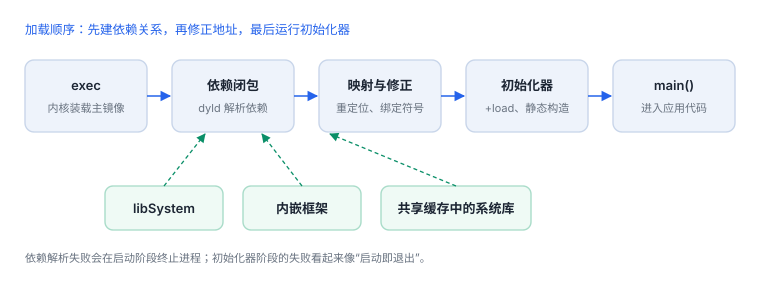
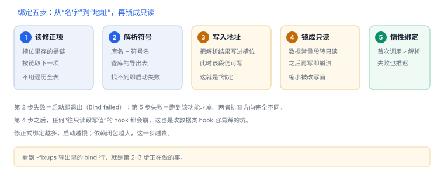
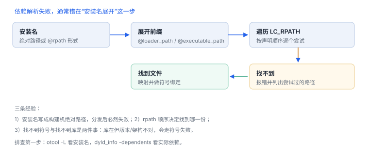

dyld 与程序加载
依赖闭包、共享缓存与链式修正，决定了启动要花多久
dyld 做四件事：读依赖、找库、修正地址、跑初始化。iOS 的三个特殊之处是共享缓存、链式修正与只读数据段——它们共同决定了启动开销，也决定了“注入一个库”到底难在哪。
场景 手指落在图标上到首帧出现，通常不到一秒。这一秒里，依赖被读了一遍、几十个库被映射、成千上万个指针被改写，然后控制权才交给 main。
1. 从 exec 到 main 的五步
- 内核映射主镜像，读到动态链接器加载命令后转入 dyld。
- dyld 递归读取依赖，形成镜像集合（依赖闭包）。
- 系统库从共享缓存映射，不逐文件打开。
- 完成重定位与符号绑定，把可写数据段按需转为只读。
- 执行初始化器（
+load、C++ 构造、Swift 元数据注册），最后进入main。

2. 共享缓存：系统库不在磁盘上
| 特征 | 含义 | 对分析的影响 |
|---|---|---|
| 数百个系统库合并为一个缓存 | 预链接、地址相对固定 | 磁盘上看不到单独的 dylib 文件 |
| 多进程共享同一份页 | 不重复占用物理内存 | 统计内存时归属容易算错 |
| 缓存自带符号表 | 支持按名字查找 | 按符号下断点可行 |
| 地址随系统版本重排 | 每次系统更新都可能变 | 跨版本偏移不能当常量 |
3. 原理推演：为什么系统库要预链接成共享缓存
进程启动时，每个外部符号都要从“名字”变成“地址”。如果按库逐个加载，就得为每个库做一次符号查找、一次重定位；库越多、符号越多，这条链越长。
预链接把常用库合并成一份、地址相对固定、符号表内置，于是启动时只需按固定布局映射，省掉了大部分查找。代价有两个：更新任一库要重建整个缓存；磁盘上再也找不到单独的 dylib 文件——这解释了两个常见困惑：为什么“改了个系统库”要等系统更新，以及为什么按文件路径找不到 libSystem。
4. 数据细节：一次启动要处理多少东西
| 对象 | 量级 | 为什么是这个量级 |
|---|---|---|
| 直接依赖 | 数个到十几个 | 主程序只声明自己直接调用的库 |
| 依赖闭包 | 数十个 | 每个依赖再带自己的依赖 |
| 共享缓存中的库 | 数百个 | 系统把常用库全部预链接在一起 |
| 页大小 | 16 KB | 映射、修正、脏页统计都按页计 |
| 链式修正项 | 每项 4 字节起 | 比旧的 rebase/bind 表更紧凑 |
由此可以推断两件事：依赖闭包越大，启动越慢；而“多链接一个库”的成本，主要在闭包扩张，不在文件大小。

5. 修正与只读化
- 修正（fixup）：镜像按首选地址映射，实际基址受随机化影响，指针与外部符号引用需要改写。
- 链式修正：新格式把修正信息组织成链（
LC_DYLD_CHAINED_FIXUPS），启动时顺序遍历；旧格式是 rebase/bind 表。 - 只读化：启动早期
__DATA_CONST可写，修正完成后转为只读，缩小运行期被改写的面。 - 惰性绑定：函数调用可延迟到首次执行时解析，失败也推迟到那一刻。
6. 搜索路径与命名空间
| 写法 | 展开方式 | 典型用途 |
|---|---|---|
@rpath | 按 LC_RPATH 列表逐个尝试 | 内嵌框架 |
@loader_path | 相对当前加载的库 | 框架互相引用 |
@executable_path | 相对主可执行文件 | 插件 |

7. 实机输出
实机输出：依赖清单
/bin/ls [arm64e]:
-linked_dylibs:
attributes load path
/usr/lib/libutil.dylib
/usr/lib/libncurses.5.4.dylib
/usr/lib/libSystem.B.dylib实机输出：版本约束写在依赖里
/bin/ls:
/usr/lib/libutil.dylib (compatibility version 1.0.0, current version 1.0.0)
/usr/lib/libSystem.B.dylib (compatibility version 1.0.0, current version 1351.0.0)实机输出：导入符号与来源库
/bin/ls [x86_64]:
-imports:
__DefaultRuneLocale (from libSystem)
___assert_rtn (from libSystem)
___bzero (from libSystem)实机输出：弱链接依赖
cmd LC_LOAD_WEAK_DYLIB
cmdsize 64
name /usr/lib/swift/libswiftCoreImage.dylib (offset 24)
compatibility version 1.0.0四组输出分别回答四个问题：依赖谁、要求什么版本、用了谁的符号、哪些是可有可无的。imports 比 nm -u 多一列来源库，排查 Symbol not found 时先看这一列。
8. 一次真实排查记录：Library not loaded
- 现象：应用启动即退出，报告首行是
Library not loaded，后面跟着一个@rpath/开头的路径。 - 先看安装名：用
otool -L确认安装名是绝对路径还是@rpath；若是绝对路径且指向构建机，分发包必然失败。 - 再看 rpath：列出
LC_RPATH，确认框架实际所在目录是否在其中。 - 核对是否打包：检查
Frameworks/是否存在该文件，以及它自身的依赖是否齐全。 - 结论与限制：记录“安装名与打包路径不一致”，并注明该结论只对当前构建配置成立。
9. 工程权衡：静态、动态与内嵌
| 方式 | 启动开销 | 体积 | 适用 |
|---|---|---|---|
| 系统库 | 低（共享缓存已映射） | 不占包体 | 通用能力 |
| 内嵌动态框架 | 中（增加闭包与修正） | 增大 | 需要独立升级或多 target 共享 |
| 静态链接 | 最低（无运行期查找） | 可能重复 | 小工具、稳定依赖 |
10. 失败分流
| 错误 | 含义 | 查哪里 |
|---|---|---|
| Library not loaded | 安装名解析不到文件 | rpath、内嵌框架是否打包 |
| Symbol not found | 库在，但无该导出 | 架构、部署目标、库版本 |
| 初始化阶段崩溃 | 依赖已加载，初始化代码失败 | 初始化器里的断言与全局状态 |
| 首次调用才崩溃 | 惰性绑定失败 | 该函数的符号来源 |
成本在闭包，不在文件
多链接一个库，主要开销是依赖闭包扩张与修正项增加，而不是包体大小；优化启动时应先看闭包，再看单库体积。
多链接一个库，主要开销是依赖闭包扩张与修正项增加，而不是包体大小；优化启动时应先看闭包，再看单库体积。
实机输出：链式修正项
/bin/ls [x86_64]:
-fixups:
segment section address type target
__DATA __got 0x100005000 bind libSystem/__DefaultRuneLocale
__DATA __got 0x100005008 bind libSystem/___stack_chk_guard读法：bind 表示这个槽位要绑定到外部符号，target 直接给出库与符号名；address 是首选地址，运行时还要加 slide。修正项里出现业务符号，往往说明该模块依赖了它。
11. 自测
- 为什么“依赖闭包”比“直接依赖”更能预测启动开销？
- 共享缓存让“按文件找系统库”失效，那应该按什么定位？
- 链式修正相比 rebase/bind 表省了什么？
Library not loaded与Symbol not found的排查顺序有何不同？